timevis

timevis is an R package I built that lets you create interactive timeline visualizations in R.
Lights Out game
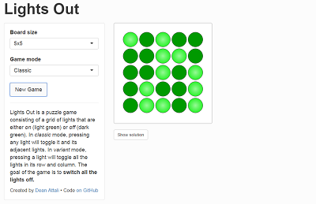
Lights Out is a fun brain-teasing puzzle game. I wrote an R implementation of the game in the package lightsout, and here you can play the game using R.
Impact Replays
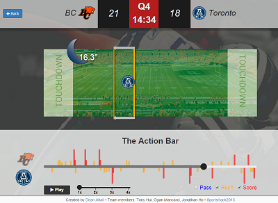
An app I wrote that won third place nationally at a CFL (Canadian Football) hackathon. The app allows you to relive the exciting moments of any CFL game.
Digital droplet PCR analysis

Analyze and visualize droplet digital PCR data (part of the ddpcr package). Part of my masters thesis. Manuscript available on F1000Research.
Cancer data
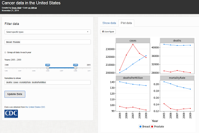
Interactively explore data about cancer incidences/deaths in the US
Analyzing R-Bloggers' posts using Twitter
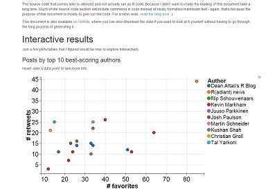
Explore the success of all R-Bloggers' posts using Twitter. (Supplement to my blog post).
Visualizing when I'm most productive during the day
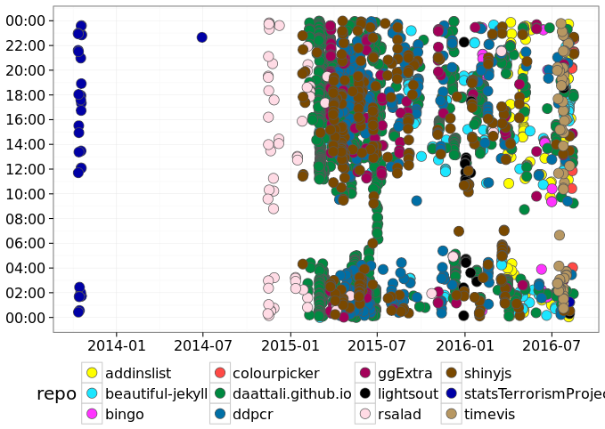
Analyzing my (and others') git activity to see our work, or coding, patterns.
colourInput
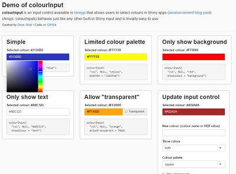
Demo of using the colourInput input control (available from shinyjs) in Shiny apps to allow users to select colours.
shinyjs demo
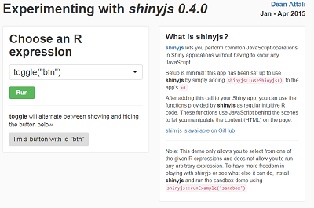
shinyjs is an R package I built that makes it easy to perform common JavaScript operations in Shiny apps. This demo allows you to experiment with different shinyjs functions
Adding marginal histograms to ggplot2
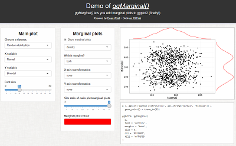
Demo of how my package ggExtra can be used to add marginal plots to ggplot2.
Persistent data storage with Shiny
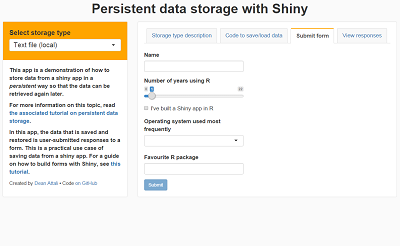
Supplement to my blog post that shows how to store and retrieve data in Shiny apps.
Mimicking a Google Form with a Shiny app
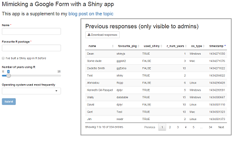
Supplement to my blog post that shows how to create forms and save/load submissions with shiny.
Bingo card generator
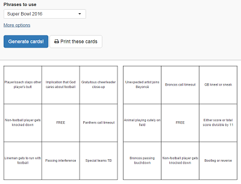
The name says it all - a simple app that lets you generate bingo cards
BC Liquor Store prices
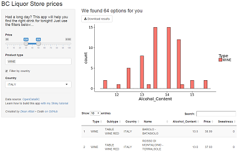
Simple app that is built as part of a Shiny tutorial I've written. The app lets you find what to get from the liquor store based on filters you choose.
Other Shiny apps that exist here
- shinyjs basic app - a very basic Shiny app showing how shinyjs functions can be used together in a simply app.
- Basic info form - a simple form that we used in a course to collect some basic information about students (example of how to use forms to collect data from a shiny app).
- Peer review form - a marking sheet that we used in a course for students to peer-review other students' assignments (example of how to use forms to collect data from a shiny app).
- Loading screen demo - an example of how to implement a simple loading screen in a Shiny app.
< Back to daattali.com
admin